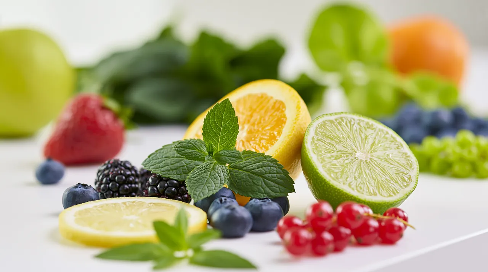

.webp)
Kolagen to najobficiej występujące białko w organizmie człowieka - stanowi ok. 30% wszystkich białek. Odpowiada za elastyczność skóry, wytrzymałość ścięgien, zdrowie stawów i kości. Po 25. roku życia produkcja kolagenu zaczyna spadać o ok. 1-1,5% rocznie, co objawia się zmarszczkami, sztywnością stawów i wolniejszą regeneracją.
Ściśle rzecz biorąc, kolagen występuje głównie w tkankach zwierzęcych - skórze, kościach i chrząstkach. Owoce i warzywa nie zawierają kolagenu jako takiego, ale dostarczaj�� składników niezbędnych do jego produkcji w organizmie. To kluczowa różnica.
Witamina C jest absolutnie niezbędna do syntezy kolagenu. Bez niej organizm nie jest w stanie produkować tego białka, nawet jeśli dostarczymy wszystkie inne składniki.
Najważniejsze owoce dla kolagenu to te bogate w witaminę C i antyoksydanty: cytrusy (pomarańcze, grejpfruty, cytryny), owoce jagodowe (truskawki, maliny, jagody, czarna porzeczka), kiwi, papaja i mango. Czerwone owoce dodatkowo zawierają likopen - antyoksydant, który chroni kolagen przed degradacją przez wolne rodniki.
Wśród warzyw prym wiodą: papryka czerwona (rekordowa zawartość witaminy C), brokuły, szpinak, jarmuż i pomidory. Warzywa ciemnozielone dostarczają chlorofilu, który według badań zwiększa ilość prokolagenu w skórze.
Regularne spożywanie owoców bogatych w witaminę C to najprostszy sposób na wsparcie produkcji kolagenu. Zamiast kosztownych suplementów - sięgnij po pomarańczę, garść truskawek lub kiwi. W DailyFruits dobieramy owoce sezonowe tak, aby zawsze dostarczały Twojemu zespołowi pełen zestaw witamin i antyoksydantów wspierających zdrowie skóry, stawów i odporności.
← Wróć do wszystkich artykułów